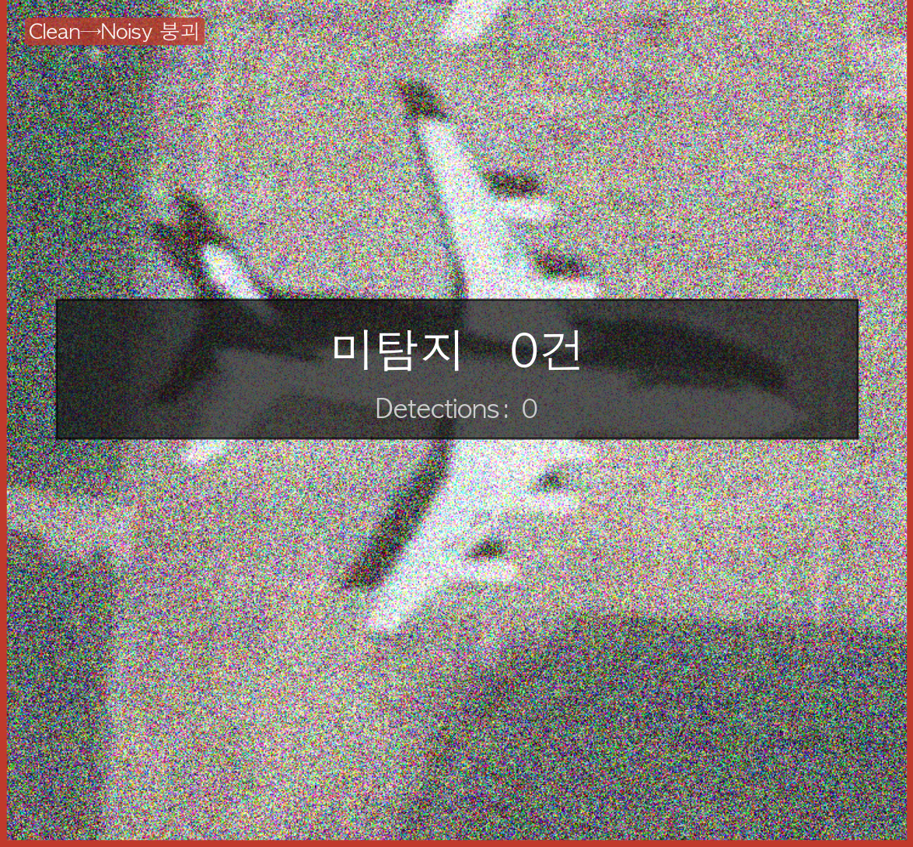

Try it — drag to compare
Under the same heavy noise, the baseline goes blind — the distilled model still sees
Same iSAID tile (P1130 aircraft) at strong Gaussian noise (σ=0.3). Drag the handle: left = Baseline (plain transfer learning) finds nothing; right = Proposed (DINOv2→YOLOv8 relational KD) keeps the lock.


⟷
Baseline · 0 detections
Proposed · detects ✓
At σ=0.3 the baseline drops to mAP50 0.009 (near-total failure); the proposed model holds 0.196 — and scores higher on clean data too. Qualitative tile from iSAID validation.